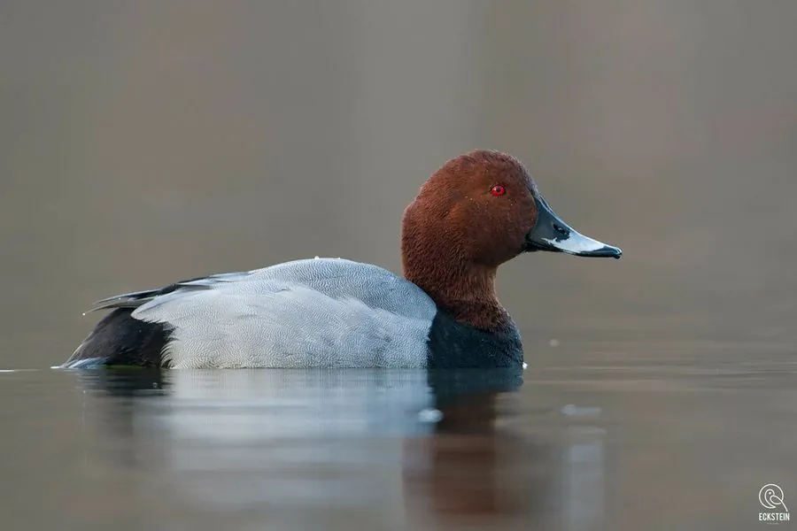

鸟类 · 动物界
红头潜鸭 Aythya ferina

欧亚大陆常见的潜水鸭，雄鸟头部栗红、胸部漆黑、体侧银灰，善潜入水中取食水草块茎，种群近年明显下降。
- 分类
- 门脊索动物门纲鸟纲目雁形目科鸭科属潜鸭属
- 栖息环境
- 欧亚大陆的湖泊、沼泽、水库与池塘，冬季也到河口和沿海潟湖
- 地理分布
- 繁殖于欧洲至西伯利亚中部，越冬于西欧、地中海、中东、印度及中国东部
- 保护级别
- IUCN 易危（VU）
物种志
红头潜鸭体长 42–49 cm，体重 700–1200 g。雄鸟头部和颈部栗红色，胸部黑色，背部和体侧银灰色并带细密波纹，尾下覆羽黑色，眼睛红色，喙灰蓝色带黑端。雌鸟通体灰褐色，头部棕褐，眼周和喙基有浅色带，羽色较为朴素。
它们繁殖于欧洲至西伯利亚中部的湖泊、沼泽和水库，冬季南迁至西欧、地中海沿岸、中东、印度及中国东部。红头潜鸭喜欢水深适中、水生植物丰富的湖泊和池塘，常成群潜水取食水草的块茎、根茎，也吃螺类、昆虫和小鱼。繁殖期在 4–6 月，巢筑于芦苇丛或水边草地，每窝产卵 8–10 枚，雌鸟孵化约 24–28 天。由于湿地退化、水体污染和狩猎，其全球种群持续下降，已被列为易危物种。
形态与习性
- 食性水草块茎与根茎，兼食螺类、昆虫和小鱼
- 体长42–49 cm
- 体重700–1200 g
- 繁殖4–6 月，每窝 8–10 枚，孵化 24–28 天
- 寿命约 10–15 年
- 现状全球种群持续下降，2015 年起列为易危
趣味知识
- 红头潜鸭能潜入数米深的水中，把水草的块茎整块扯出来吃掉。
- 雄鸟的栗红色头部与银灰色体侧形成鲜明对比，在鸭群中很好辨认。
- 它是潜水鸭中数量下降最快的种类之一，2015 年被列为易危物种。